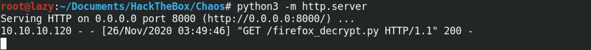

April 23, 2021
In this tutorial we will see how to recover passwords from a Firefox profile which is protected by a Master password (now it is called a Primary Password by Mozilla). However, if there is a profile that is not protected by a Master Password, a password will be requested by the script but it can be left blank. It is important to note that this tool does not brute-force or crack the Master Password. So, if you don't know the Master Password then this will not be able to recover your passwords.
We can see that we have a .mozilla directory in our home folder. This is the place where the Firefox profile resides.
Inside the .mozilla directory, there are a couple of other directories: extensions and firefox. We can find the Firefox profile in the firefox directory. In this case the profile file has the name of "bzo7sjt1.default".
Let's download the firefox_decrypt.py Python script from its GitHub page.
In this case, I downloaded it using wget. However, we can download it using a browser as well if we choose to do so. I am downloading this script to my local machine.
This shows me downloading this script from my local machine to the target box. I am doing this because the target box doesn't have access to the Internet.
This shows the Python web server responsding with a 200 OK message. This means that the requested file exists on the web server.
Once the script is run, it finds the Firefox profile and prompts for the Master Password. In this case, the Master Password is "jiujitsu". Upon entering the Master Password, it reveals the user credentials.